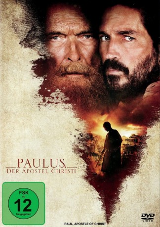

#9262 Paulus, der Apostel Christi
Alternativ: Paul, Apostle of Christ
 
 IMDB-Wertung: 6.7 / 10
IMDB-Wertung: 6.7 / 10  Metascore: 52
Metascore: 52 
Paulus (James Faulkner) der vom berüchtigten Christenverfolger zum einflussreichsten Apostel Christi wird, verbringt seine letzten Tage, um auf seine Hinrichtung in Rom zu warten. Paulus steht unter dem wachsamen Auge von Mauritius (Oliver Martinez), dem ehrgeizigen Präfekten des Mamertine Gefängnis, der verstehen will, wie dieser gebrechliche, alte Mann eine solche Bedrohung darstellen kann. Während Paulus‘ Tage im Gefängnis gezählt sind, arbeitet er fieberhaft, um das Evangelium Jesu Christi zu schreiben und ermutigt seine Anhänger, in ihrem Glauben stark gegen die Verfolgung durch die Römer zu sein.
Jahr: 2018
Dauer: 107 Minuten
FSK: 12
Land: USA Studio: Columbia PicturesTonspuren: DTS - ,
Untertitel:
Auflösung: 1080p (1920x808) Größe: 6103 MB
Genre: Drama, Geschichte
Regisseur: Andrew Hyatt
Drehbuch: Terence Berden
Soundtrack: Jan A.P. Kaczmarek
Darsteller:
 Jim Caviezel als Luke
Jim Caviezel als Luke James Faulkner als Paul
James Faulkner als Paul Olivier Martinez als Mauritius Gallas
Olivier Martinez als Mauritius Gallas Joanne Whalley als Priscilla
Joanne Whalley als Priscilla John Lynch als Aquila
John Lynch als Aquila- Yorgos Karamihos als Saul of Tarsus
 Antonia Campbell-Hughes als Irenica
Antonia Campbell-Hughes als Irenica- Alexandra Vino als Octavia
 Manuel Cauchi als Ananias
Manuel Cauchi als Ananias Noah Huntley als Publius
Noah Huntley als Publius- Kenneth Spiteri als Eubulus
- John-Paul Pace als Christian Man
- Erica Muscat als Christian Woman
- Jacob Daniel Groth als Young Christian Man
- Christopher Dingli als Roman Doctor
 Mario Opinato als Balbus
Mario Opinato als Balbus Husam Chadat als Gamaliel
Husam Chadat als Gamaliel- Edward Mercieca als High Priest
- Joe Azzopardi als Roman Thug
- Nikovich Sammut als Market Grower / Roman by Burning Dummy
- Morgan Chetcuti als Christian Tied to a Post
- Alessandro Sperduti als Cassius
- Anthony Edridge als Severus
- André Agius als Stephen
- Henry Holland als Young Saul of Tarsus
- Nina Sultana als Little Girl
- Natalie Rossignaud als Young Girl
- Iskander El Hag Aisa als Christian Man 4
- Daryl Luke Vassallo als Tarquin
- Vladislav Ilich als Judas
- Anthony Ellul als Jewish Doctor
- Stephen Buhagiar als Jewish Man 1
- Mikhail Basmadjian als Jewish Man 2
- Philip Mizzi als Elder
- Graham Charles als Roman Soldier
- Nora Jolie Eckermann als Caelia
- Sarah Michelle Attard als Beaten Woman
- Stephen Caruana als Beaten Man
- Neil Martin als Roman Soldier 1
- Jeremy Debattista als Roman Soldier 2
- Luke Tabone als Prefect's Office Guard 1
- Aaron Fenech als Prefect's Office Guard 2
- Nick Mangion als Christian from Camp
- Jonathan Aquilina als Thug 1
- Jonathan Delia als Thug 2
- Sean Zerafa als Roman Thug
- Ronald Abdilia als Angry Man 1
- Albert Dibbon als Angry Man 2
- Robert Grima als Executioner
- Byron Sultana als Slave
Datei: X:\2018(N-Z)\Paulus, der Apostel Christi (2018, FSK12, 1920x808).mkv seit 20.07.2018
Festplatte: HD 2018(G-Z)-2019(A-Z)
 Es gibt insgesamt 172 Filme in der Gruppe '2018(N-Z)'
Es gibt insgesamt 172 Filme in der Gruppe '2018(N-Z)'